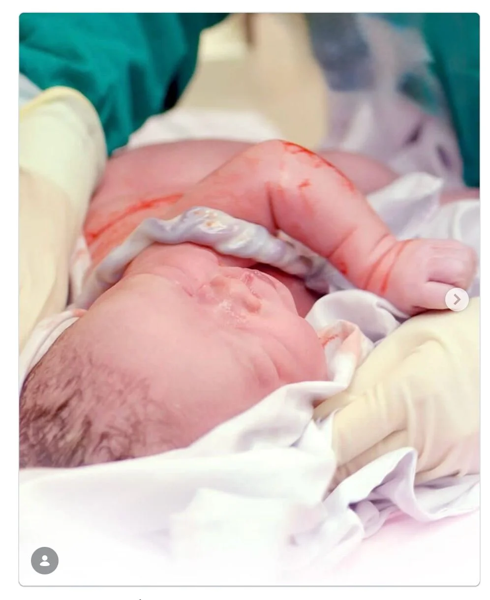
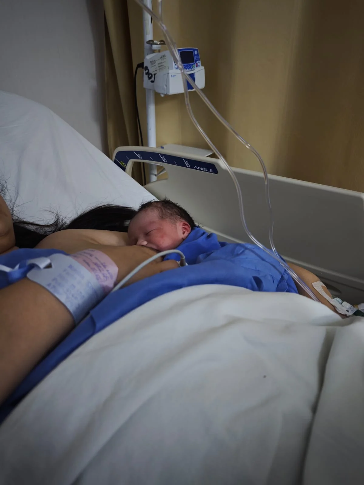
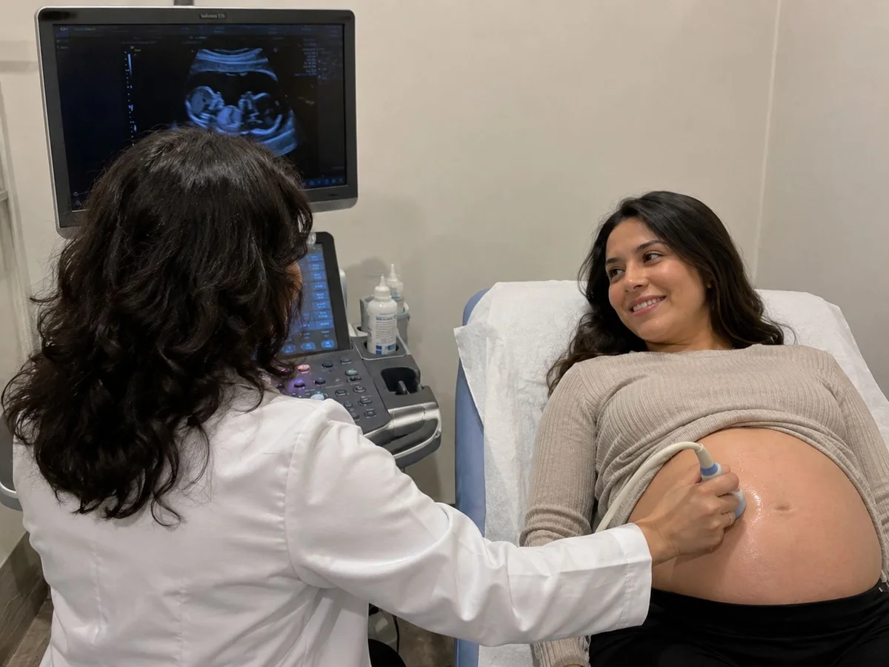
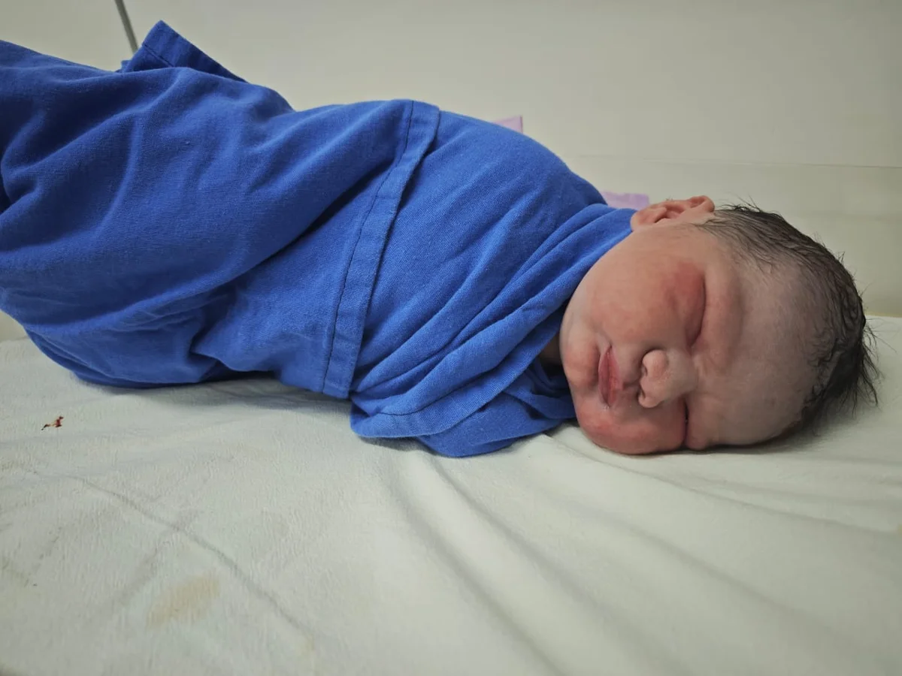
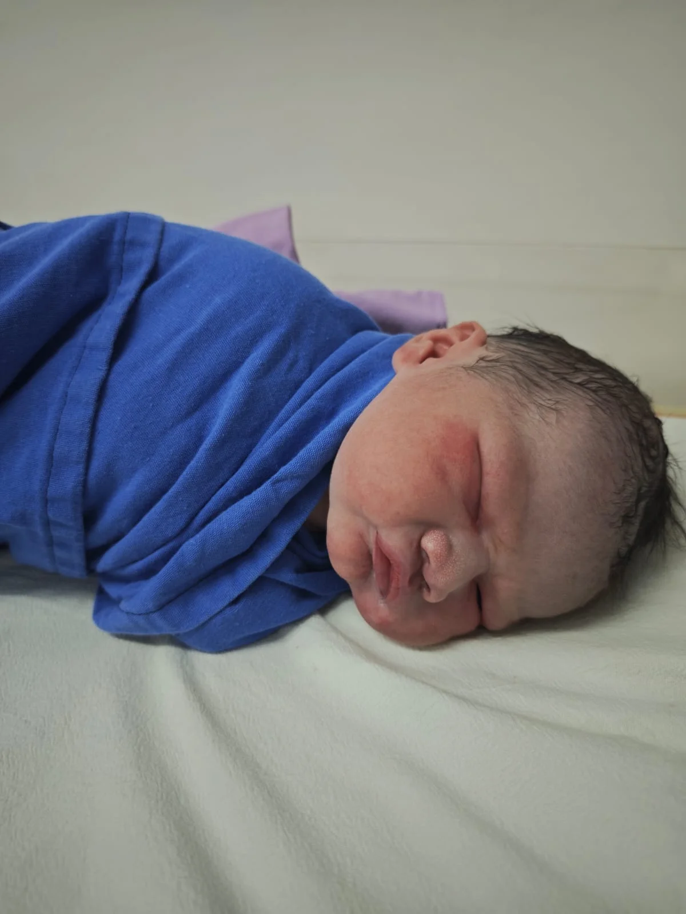
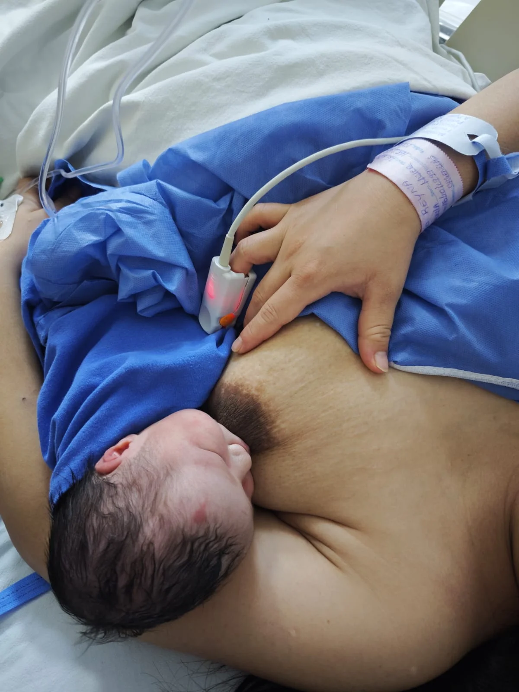
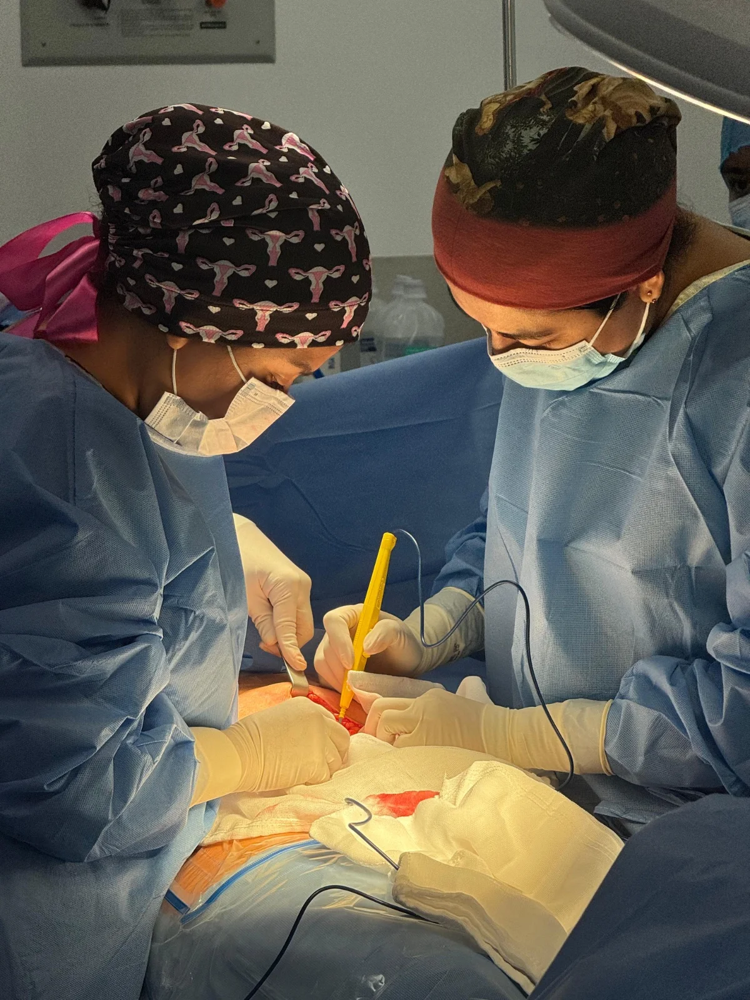
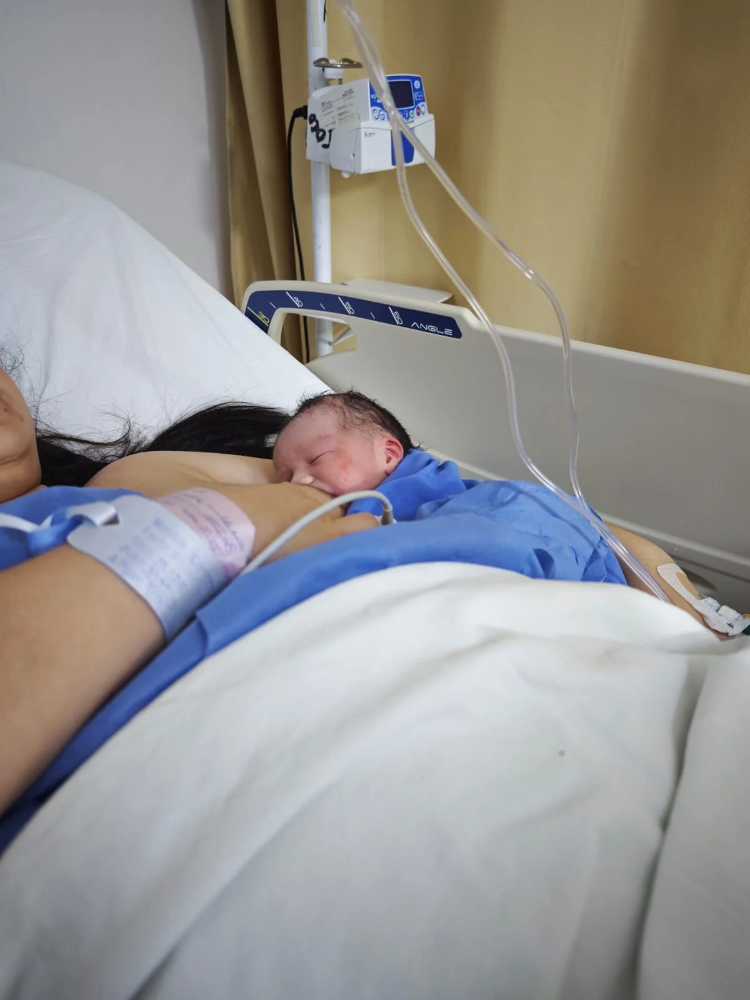

Si te preguntas dónde hacerse el Papanicolaou con total tranquilidad, la Dra. Lidia Chávez realiza el estudio de Papanicolaou en CDMX con máxima higiene y calidez médica en Polanco.
Cuidamos la salud de tu cuello uterino mediante una prueba rápida e indolora. Agenda tu citología en minutos por WhatsApp.
El Papanicolaou (citología cervical) es una prueba preventiva que toma una pequeña muestra de células del cuello uterino para ser estudiadas bajo el microscopio por patólogos certificados.
Su función es identificar alteraciones celulares iniciales provocadas por el Virus del Papiloma Humano (VPH). Al detectar estas anomalías a tiempo, es posible brindar un tratamiento preventivo que evita complicaciones mayores.
Si te preguntas dónde hacerse el Papanicolaou en Polanco o Anzures, el consultorio de la Dra. Lidia Chávez en Aurafem cuenta con instrumental estéril de un solo uso y un ambiente seguro.
La muestra se envía a patología y se entrega en pocos días hábiles con una explicación clara de la especialista.
Agendas fuera de tus días menstruales rápidamente.
En un espacio privado te explicamos el procedimiento.
Uso de espéculo estéril y recolección celular en 3 minutos.
Recibes tu resultado patológico procesado con explicación clínica.
Se recomienda realizar el Papanicolaou al menos una vez al año a partir del inicio de la vida sexual activa o desde los 21 años.
En el consultorio de la Dra. Lidia Chávez en Aurafem (Polanco / Anzures, CDMX). El estudio se efectúa con instrumental estéril y técnica gentil.
Sirve para examinar la morfología de las células del cuello uterino, detectando lesiones inflamatorias o atipias celulares provocadas por el VPH.
Los resultados procesados por patología especializada se entregan en pocos días hábiles con una explicación médica comprensible.
Acudir sin menstruación activa, suspender el uso de duchas u óvulos vaginales 48 horas antes y abstenerse de mantener relaciones sexuales 24 a 48 horas previas.
Conoce de cerca nuestro consultorio en Polanco, equipamiento y el entorno seguro de atención ginecológica.

Toma de citología cervical preventiva
Instrumental médico estéril y desechable
Preparación para el estudio de Papanicolaou
Muestras citológicas para patología
Explicación de resultados de Papanicolaou
Espacio privado y confiable en Polanco
Análisis especializado en laboratorio patológico
Cuidado preventivo anual para mujeresLa Dra. Lidia Chávez brinda atención ginecológica en Polanco, CDMX, con un enfoque profesional, respetuoso y firmemente orientado al bienestar integral de cada paciente.
Atención médica para valoración, diagnóstico y seguimiento personalizado.
Ver servicio →Evaluación visual especializada del cuello uterino con lente de aumento.
Ver servicio →Cuidado médico constante para la salud materna y del bebé en desarrollo.
Ver servicio →Acompañamiento profesional y humano durante todos los trimestres.
Ver servicio →Diagnóstico, prevención, manejo de lesiones y asesoría especializada en VPH.
Ver servicio →Chequeo completo integral para mantener tu bienestar en cada etapa.
Ver servicio →Atención en zona Miguel Hidalgo, cerca de Polanco, con un fácil acceso y conectividad desde Benito Juárez, Cuauhtémoc y zonas aledañas.
Cantú 11, Colonia Anzures, Miguel Hidalgo, 11590 Ciudad de México, CDMX.
La información contenida en esta página web posee fines exclusivamente educativos e informativos y bajo ningún concepto sustituye una valoración médica profesional en consultorio. Para recibir orientación médica adecuada, agenda una consulta formal con la especialista.
Escríbele directamente a la Dra. Lidia Chávez para revisar fechas disponibles, horarios de atención y resolver tus dudas de forma rápida.
Agendar ahora por WhatsApp